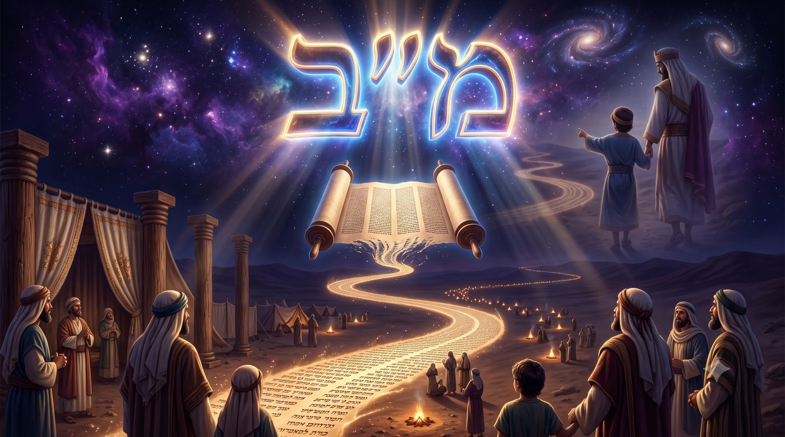
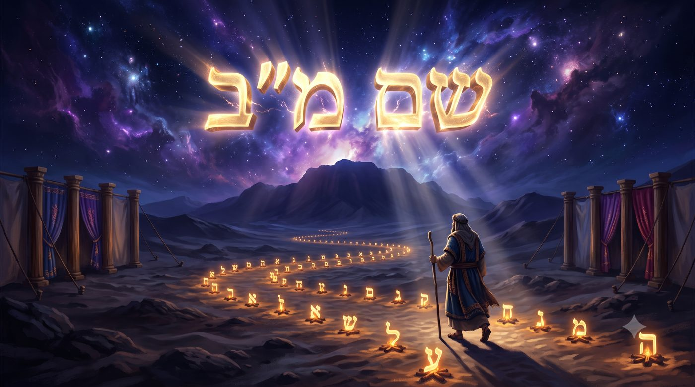
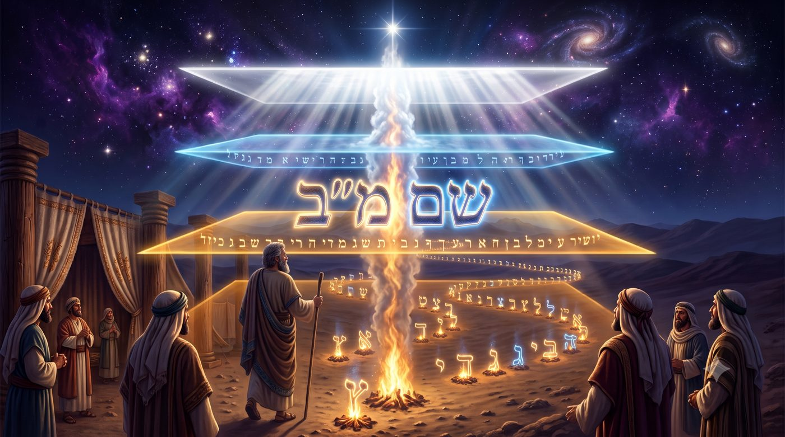
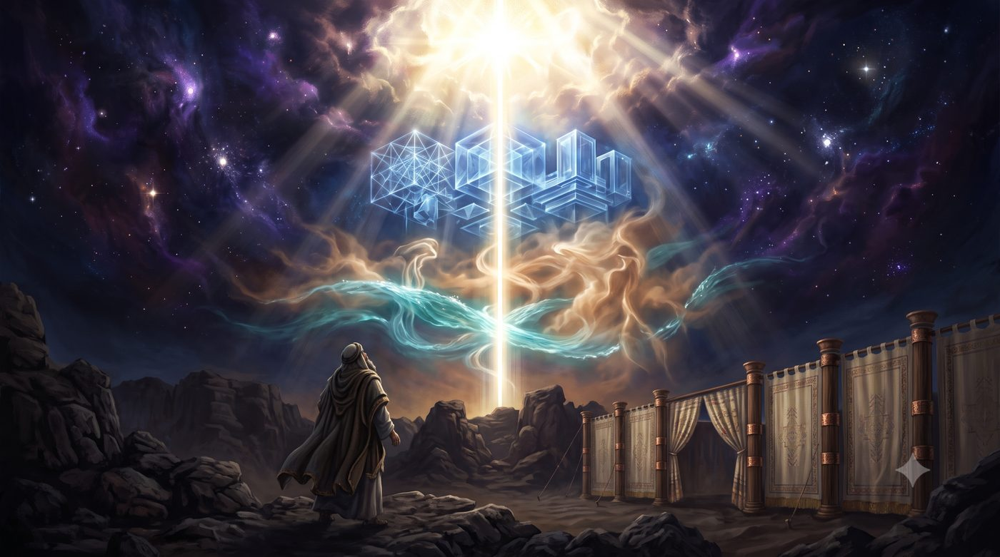
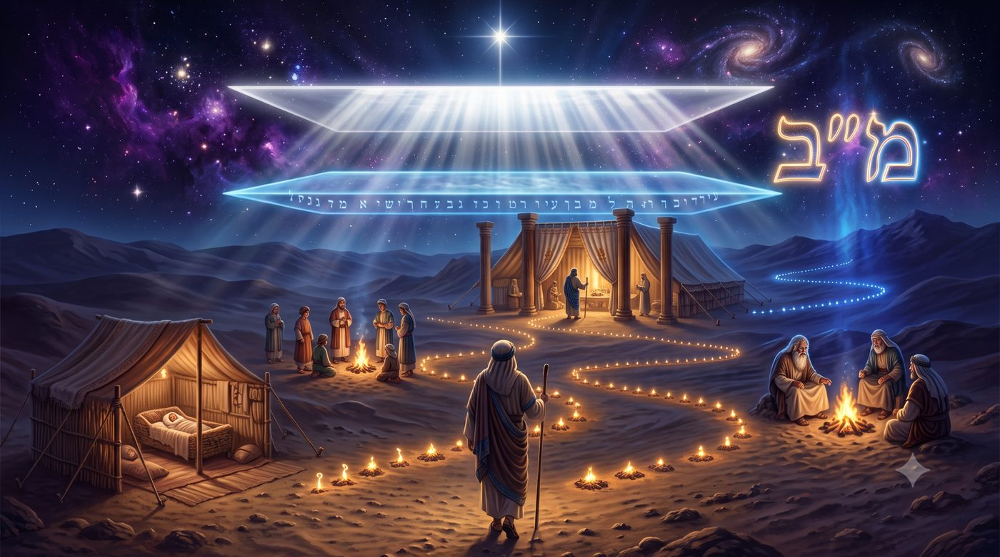
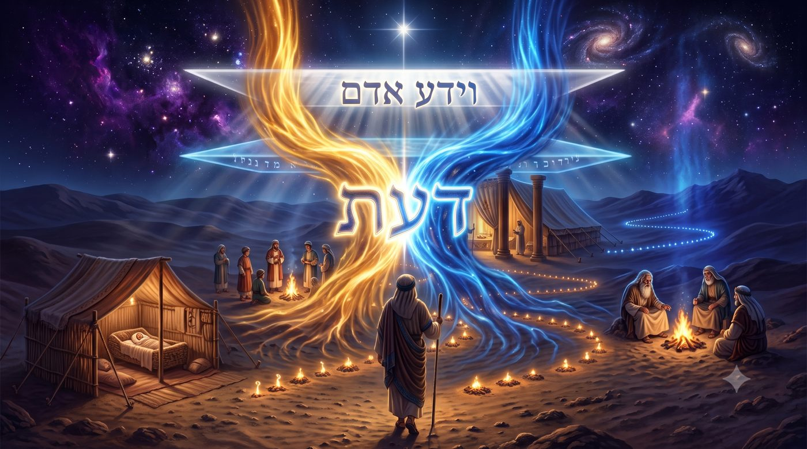
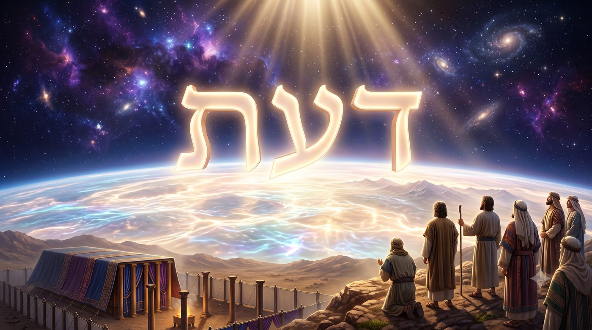

Voyager pour chercher le Da'at
Pourquoi la Torah égrène 42 étapes déjà racontées, comme si chaque halte poursuivait, à l'insu du peuple, un objectif plus grand que la marche elle-même ?
Après trente-neuf chapitres de récit, où chaque étape du désert a déjà été racontée en son temps, la Torah s'arrête et recommence tout, sous la forme d'une simple récapitulation : « Voici les voyages Massei des enfants d'Israël... » (Bamidbar 33:1). Quarante-deux noms de lieux, Kivrot HaTaava, Hatserot, Ritma, Rimon Perets, égrenés les uns après les autres sans une ligne de commentaire, comme un procès-verbal administratif glissé au cœur d'un des livres les plus denses de toute la Torah.

Rachi ouvre son commentaire par la question qui nous démange : « pourquoi ces étapes ont-elles été écrites ? » Sa première réponse regarde vers l'histoire. Sur quarante ans passés dans le désert, il n'y eut en réalité que quarante-deux campements, et la plupart datent des deux premières années et de la dernière. Le peuple, contrairement à ce qu'on pourrait croire, n'a donc pas erré sans fin d'un lieu à l'autre : dans les trente-huit années intermédiaires, à peine une vingtaine d'étapes, le reste du temps se passant sur un seul et même campement. La liste, dit Rachi, sert « à faire connaître les bontés du Lieu » : elle prouve, chiffres à l'appui, que l'errance elle-même fut mesurée, encadrée, presque douce.
Puis vient une seconde explication, au nom de Rabbi Tan'houma, portée par une parabole rapportée dans Bamidbar Rabba. Un roi avait un fils malade ; il l'emmena au loin pour le soigner. Sur le chemin du retour, l'enfant guéri, le père se mit à raconter chaque étape à son fils : « ici nous avons dormi, ici nous nous sommes rafraîchis, ici tu as eu mal à la tête. » Ainsi le Saint béni soit-Il dit à Moché : énumère-leur chaque lieu où ils M'ont irrité. Sous la tendresse apparente du souvenir partagé, la parabole cache donc son vrai objet. Ce compte des étapes est aussi, et peut-être surtout, un compte des fautes, dressé avec la douceur d'un père qui aime malgré tout.
Le Ramban ajoute une troisième couche, sans reprendre la parabole. Pour lui, consigner ces quarante-deux lieux précis, dans une région où nul n'aurait pu survivre sans miracle continu, établit un témoignage permanent contre le scepticisme des générations futures. Il s'appuie sur le Rambam, qui écrivait déjà dans le Guide des Égarés que quiconque douterait un jour de la réalité de la manne et de la providence du désert pourrait vérifier, lieu par lieu, que le peuple a bien traversé cette terre impossible et en est ressorti vivant. Une liste de noms, pour le Ramban, vaut mieux qu'un long discours : elle ne peut pas être inventée après coup, elle ne fait que constater.
Il suffit d'ailleurs de regarder de plus près certains de ces noms pour comprendre que la liste n'a rien d'un simple squelette administratif. Kivrot HaTaava, « les tombes de la convoitise », rappelle l'épisode où le peuple, réclamant de la viande avec démesure, en paya le prix par une épidémie (Bamidbar 11). Rimon Peretz, Rissa, Kehelata : chaque nom porte, condensé en deux ou trois mots, un épisode entier que le récit avait déjà raconté en détail des chapitres plus tôt. La sécheresse apparente de l'énumération est donc trompeuse. Elle ne remplace pas l'histoire, elle la classifie, comme une carte comprime un territoire sans en perdre les reliefs essentiels.
Trois raisons, donc, pour une seule liste : la douceur d'un compte qui rassure, la tendresse amère d'un compte qui accuse, et la rigueur d'un compte qui prouve. Mais aucune de ces trois lectures n'explique un détail intrigant : pourquoi précisément quarante-deux ? La Torah aurait pu s'arrêter à trente, ou à cinquante, sans que le sens des trois explications n'en soit changé. Elle s'arrête à quarante-deux, et ce nombre, nous allons le voir, n'est pas neutre.
Avec l'aide du Ciel et de nos maîtres, nous verrons pourquoi ce nombre précis est la signature d'un Nom divin que la tradition dit capable de faire passer les mondes, comment ce même Nom se retrouve au cœur du Kaddish que nous récitons chaque jour, et comment quarante-deux voyages tracés dans le sable pourraient bien être la carte d'un seul et même chemin : celui qui mène, à travers chaque vie, vers le Da'at, la connaissance vécue de D.ieu.
• 42 étapes d’un voyage
• Le Chem Mem-Bet, la clé cachée des 42 voyages
• Le Nom qui fait voyager entre les mondes
• Nos 42 voyages
• Chercher le Da'at durant nos voyages
Le Magen Avraham, un maître de la Hala'ha, éclaire discrètement ce nombre dans ses lois sur la lecture publique de la Torah (Ora'h Haim 428). Il rapporte au nom du Tzror HaMor une règle de lecture précise : on ne doit jamais interrompre, en plein milieu, l'énoncé des quarante-deux voyages de notre paracha, « car cela correspond au Nom à quarante-deux [lettres] ». Le Tzror HaMor, c'est Rabbi Avraham Saba, un maître exilé d'Espagne en 1492 puis chassé à nouveau du Portugal quelques années plus tard, qui composa une grande partie de son œuvre en fuite, sans livre ni bibliothèque, portant son érudition dans sa seule mémoire. Il n'est peut-être pas indifférent qu'un homme dont la propre vie fut une suite ininterrompue de départs forcés ait été celui qui a le mieux vu, dans les quarante-deux départs du désert, la trace d'un Nom sacré.

Ce Nom, que l'on dénomme le Chem Mem-Bet (42), n'est pas une invention tardive. Le Talmud lui-même, dans Kiddouchin 71a, en parle comme d'un secret d'une extrême gravité : « le Nom de quarante-deux lettres n'est transmis qu'à celui qui est discret, humble, qui ne s'emporte pas, ne s'enivre pas, et ne cherche pas à faire valoir ses droits. » Celui qui le reçoit dans la pureté, ajoute le Talmud, devient aimé en Haut et agréable en bas, il inspire la crainte et hérite des deux mondes, celui-ci et celui qui vient. Rachi et le Rambam diront même, plus tard, que ce Nom, dans sa transmission orale intégrale, s'était déjà perdu de leur temps. Voilà qui prouve, s'il en fallait une, qu'il ne s'agit pas d'un simple code que l'on prononcerait comme une formule, mais d'un secret que l'on ne mérite qu'à force d'une vertu rare.
Il n'est certainement pas indifférent que le Talmud place cet enseignement dans le traité de Kiddouchin, consacré aux lois du mariage : un Nom qui exige l'humilité pour être transmis trouve naturellement sa place à côté des lois qui unissent un homme et une femme, deux façons de recevoir quelque chose de sacré sans le déformer par l'ego. Nous retrouverons cette parenté plus loin, avec le Da'at comme lien d'union.
La tradition mystique associe ce Nom à une prière que l'on récite au coucher, et également lors de la Kabbalat Chabbat, la réception du Chabbat le vendredi soir : Ana BeKoa'h, sept lignes de six mots, formant précisément quarante-deux mots, dont les initiales, mises bout à bout, épellent le Chem Mem-Bet lettre après lettre. La structure elle-même, de ce texte est vérifiable mot par mot : quarante-deux mots, quarante-deux lettres, un Nom entier tissé dans le corps même du texte. Dans nombre de communautés, on la récite chaque soir avant le Chema du coucher, ou à l'ouverture de Kabbalat Chabbat, précisément parce qu'elle est perçue comme une supplique de protection et de force, koa'h, pour affronter ce que la nuit ou la semaine à venir portera d'inconnu.
Et voici que ce même nombre gouverne la marche du désert. Quarante-deux campements, comme les quarante-deux mots d'Ana BeKoa'h. Le Magen Avraham ne dit pas que le désert illustre le Nom de loin, par une simple analogie poétique : il dit que la lecture de cette liste, dans le rouleau, porte le Nom, au point qu'on ne peut légitimement l'interrompre sans abîmer quelque chose de plus grand qu'une pause de lecture. Chaque étape du peuple deviendrait ainsi, dans cette lecture, une lettre vivante d'un Nom que le peuple traverse sans le savoir, simplement en marchant, en dressant une tente puis en la repliant.
Il y a quelque chose de vertigineux dans cette idée. Le désert semblait n'être qu'une punition prolongée, un détour de quarante ans infligé à une génération qui avait douté à la frontière de la Terre promise. Et voici qu'un maître du quinzième siècle, cité par un décisionnaire du dix-septième, nous dit que ce détour dessinait, pas après pas, l'un des Noms les plus sacrés de toute la tradition, et que les Bnei Israel ne s’était nullement perdue dans le désert voue à y mourir mais qu’ils devaient écrire le nom de D.ieu dans le sable.
Le pire détour de l'histoire d'Israël portait, en secret, la trame d'un Nom que la tradition dit sacré entre tous.
Reste à comprendre ce que ce Nom accomplit exactement, au-delà de sa seule structure. Un texte du Ari Z"L, rapporté par 'Haïm Vital dans le Peri Etz Haim, tranche ce sujet sans détour : « il n'y a jamais de possibilité d'élévation si ce n'est par le Nom de quarante-deux, et ce Nom de quarante-deux est celui qui fait monter toute élévation qui existe dans tous les mondes. »

Ce texte décrit la prière du matin comme un déplacement, un véritable voyage à travers quatre degrés de réalité. Depuis le début de l'office jusqu'à Baroukh Chéamar, dit-il, nous sommes dans le monde d'Assiya, le monde de l'action la plus dense, le plus proche de la matière. De là, jusqu'à Yotser Or, nous montons dans le monde de Yetsira, celui de la formation des mala’hims. De là jusqu'à la Amida, nous entrons dans Beria, le monde de la création proprement dite. Et la Amida elle-même, enfin, se tient dans Atsilout, le monde de l’émanation, le plus proche de la source, là où toute distance avec D.ieu s'efface presque. Le Kaddish, à chaque charnière entre ces mondes, est appelé dans ce texte « le pilier », amoud en hébreu, celui qui permet le passage d'un monde à l'autre.
Pour comprendre la portée de cette échelle, il faut se représenter ce que chacun de ces quatre mondes signifie. Assiya, c'est le monde de l'action et de la matière, celui où tout semble dense, opaque, résistant, le monde où l'on se lève le matin sans grand élan. Yetsira, c'est le monde de la formation, celui où les émotions se dessinent, où un sentiment encore informe commence à prendre corps. Beria, c'est le monde de la création véritable, celui de l'intellect qui conçoit, qui comprend, qui relie les idées entre elles. Atsilout, enfin, c'est le monde de l'émanation, si proche de la source qu'on n'y perçoit presque plus de séparation entre la lumière et celui qui la reçoit. Cette échelle ne décrit pas seulement la prière du matin : elle décrit la structure de toute réalité, du plus dense au plus subtil, et c'est précisément cette échelle entière que le désert, avec ses quarante-deux voyages, aurait fait traverser au peuple, un monde après l'autre, un campement après l'autre.

Ce mot, pilier, n'est pas choisi au hasard, et il referme une boucle sur notre sujet. Car ce sont les mêmes lettres, exactement, que celles employées pour décrire ce qui guidait le peuple pendant ses quarante-deux voyages : « l'Éternel marchait devant eux, le jour dans une colonne (amoud) de nuée [...] et la nuit dans une colonne de feu » (Chemot 13:21). Le peuple suivait, dans le désert, un amoud de nuée et de feu. La Tefila suit aujourd'hui, à travers les mondes, un amoud de mots et de lettres. Deux voyages, un même pilier pour les conduire jusqu’à la Amida.
Ce pilier, précisément, tient par le Chem Mem-Bet, et le texte va jusqu'à le dire de la façon la plus explicite : « c'est pourquoi l'ensemble du Kaddish est de quarante-deux mots. » Le Kaddish entier, en somme, porte le même compte exact qu'Ana BeKoa'h, mais différemment. Le texte détaille alors une architecture numérique imbriquée, cachée dans les mots eux-mêmes. Le cœur du Kaddish, « Yehei Chemé Raba mevara'h », compte sept mots et vingt-huit lettres ; la réponse complète de l'assemblée en compte, elle aussi, vingt-huit ; et les sept verbes de louange qui suivent, Yitgadal, Yitkadash, Yitbara'h, Yishtaba'h, Yitpaar, Yitromam, Yitnassé, comptent chacun six lettres, soit sept fois six, quarante-deux à nouveau.
Le lien entre ces deux nombres n’a rien d’un jeu : il tient à la façon même dont le Nom de quarante-deux est fabriqué. C’est le Tétragramme, le Nom de quatre lettres, déplié en trois étages. Premier étage, le Nom tel qu’on l’écrit : quatre lettres. Deuxième étage, on épelle chaque lettre par son nom entier, le youd s’écrit יוד, le hé s’écrit הא, et l’on atteint quatorze lettres. Troisième étage, on épelle une fois encore les lettres de cette couche, ce qui ajoute vingt-huit lettres et fait tomber, exactement, sur quarante-deux (4+10+28=42). Le vingt-huit n’est donc pas un autre nombre que le quarante-deux : c’est son étage le plus profond, la dernière couche de son dépliement. Quand le Kaddish fait affleurer vingt-huit lettres dans son cœur et quarante-deux dans ses verbes, il ne montre pas deux secrets, mais le même Nom à deux profondeurs, son noyau et sa forme entière.
Il faut ici marquer une différence essentielle. Ana BeKoa'h est, littéralement, un acrostiche du Nom : ses lettres initiales épellent le Chem Mem-Bet, mot après mot. Le Kaddish, lui, atteint le même compte total de quarante-deux mots, sans en reproduire les lettres sous nos yeux. Ana BeKoa'h dit le Nom ; le Kaddish le porte silencieusement, à chaque fois qu'il est prononcé. Chaque fois qu'un fidèle répond « Amen, yehei chemé raba », il actionne donc, sans le savoir, le même mécanisme qui a fait traverser le désert au peuple entier. Le voyage extérieur et le voyage intérieur partagent la même carte, le même Nom, le même pilier.
Le texte précise encore que ce mécanisme renvoie à un sod plus ancien, mentionné dans le Zohar sur Parachat Terouma : ce Nom, y est-il dit, « monte et ne descend jamais ». Une fois qu'une prière a été portée par lui d'un monde à l'autre, rien ne peut plus la faire redescendre, aucune élévation n'est jamais reprise ni annulée.
Il y a là une consolation profonde pour quiconque a l'impression de stagner dans sa prière. Un Kaddish récité par obligation, dans une synagogue vide un soir de semaine, semble souvent n'être qu'un mot de plus dans une journée déjà pleine. Et pourtant, si ce texte dit vrai, ce mot-là fait déjà, sans que nous le sentions, le travail des quarante-deux voyages : il fait passer quelque chose d'un monde à un autre. Le désert n'était peut-être pas qu'une métaphore de la vie spirituelle. Il en était la mécanique exacte, révélée d'avance dans le sable.
Le Kaddish que l'on récite chaque jour porte, sans bruit, le même Nom, et suit le même pilier, qui a fait traverser le désert à tout un peuple.
Un maître 'hassidique tire de tout cela une conséquence qui touche directement chaque vie, bien au-delà du désert biblique. Rabbi Moché 'Haïm Efraïm de Sudylkov, petit-fils du Baal Chem Tov, rapporte dans le Degel Ma'hané Efraïm, sur notre paracha, un enseignement reçu de son grand-père : « la naissance et la sortie du sein maternel sont comme la sortie d'Égypte [...] et l'on va ensuite de voyage en voyage, jusqu'à parvenir au monde supérieur. »

L'image est limpide, et elle porte notre sujet. Les quarante-deux voyages ne racontent pas seulement l'histoire d'un peuple mort dans le désert depuis longtemps ; ils racontent la structure de toute existence humaine. Chaque naissance est une sortie d'Égypte, chaque vie une marche à travers ses propres campements, chacun avec son nom, sa durée, ses épreuves particulières. Certains voyages sont brefs, presque anodins, comme ces stations du désert où le peuple ne resta qu'une nuit avant de replier les tentes. D'autres durent des années, comme le long séjour à Kadesh, où toute une génération vieillit et disparut. Mais tous, sans exception, appartiennent à la même liste ; tous mènent, tôt ou tard, vers ce que le texte appelle « le monde supérieur ».
Ce qui frappe, dans cet enseignement, c'est qu'il ne distingue pas les voyages heureux des voyages douloureux. Le Baal Chem Tov dit toutes les étapes, y compris celles que la parabole de Rabbi Tan'houma associait aux moments où le peuple L'a irrité : une faute majeure, un travail perdu, une maladie traversée, un deuil douloureux, ou simplement une semaine où il ne se passe, en apparence, rien de spécial. Chacun de ces moments prend place dans la même liste sacrée que Kivrot HaTaava ou le mont Hor ; rien n'en sort.
Nous jugeons souvent nos vies par leurs sommets, le jour d'une naissance, d'un mariage, d'une réussite qu'on montre avec fierté. Le Baal Chem Tov, lui, regarde la liste entière, sans exception, comme celle de ce chapitre de Bamidbar. Et si l'on file la comparaison jusqu'au bout, chaque vie porterait, elle aussi, son propre Nom de quarante-deux lettres, tissé dans l'ordre exact de ses propres voyages, lisible seulement à la fin, comme la liste de Moché ne fut écrite qu'au terme du parcours.
Ce dernier détail n'est pas anodin, et il mérite qu'on s'y arrête. Rachi précise que Moché consigna cette liste selon l'ordre de D.ieu, mais après coup, une fois le voyage terminé, non pas étape par étape à mesure qu'elles survenaient. Sur le moment, le peuple ne voyait qu'une marche, parfois heureuse, souvent pénible, jamais dotée d'un plan visible depuis le sol du désert. Ce n'est qu'une fois arrivé aux plaines de Moav, au seuil de la Terre promise, que le dessin entier put être tracé et lu comme une seule œuvre cohérente, avec un début, un milieu et une fin. Ainsi de nos propres vies : le sens d'une épreuve, le plus souvent, ne se révèle pas pendant qu'on la traverse, mais seulement depuis le point, plus tardif, où l'on regarde, enfin arrivé quelque part, le chemin parcouru.
Chaque vie porte sa propre liste de quarante-deux voyages, et rien de ce qui la compose n'est trop petit pour y figurer.
Il reste une question que nous avons portée depuis le début, sans y répondre directement : vers quoi, au juste, mènent ces quarante-deux voyages ? Le Nom qui les porte fait passer les mondes, avons-nous vu ; mais passer vers quoi ? Ici, je veux vous proposer une lecture personnelle, construite sur deux enseignements solides, que je n'ai trouvée telle quelle chez aucun maître nommé. C'est une hypothèse de travail que je vous présente comme telle, un pont que je construis entre deux rives bien réelles.

Le premier pilier de cette lecture est le Tanya. Rabbi Chnéour Zalman de Lyadi y explique que le Da'at, la connaissance, n'est pas un simple savoir sur un objet extérieur à soi. Il en donne la preuve dans le langage biblique lui-même : « veha'adam yada et 'Hava ichto », « l'homme connut 'Hava sa femme » (Bereshit 4:1). Ce « connaître »-là dépasse l'information qu'on apprend une fois pour toutes : une union qu'on vit, un attachement, un lien de cœur à cœur, avant même l'épisode de l'arbre et de l'expulsion du jardin. Le Da'at, écrit le Tanya, est « le fondement des attributs [émotionnels] et la source de leur vitalité » : sans lui, même la compréhension intellectuelle la plus profonde des grandeurs divines ne produit que des images vaines, jamais une crainte ou un amour réellement vécus. Le Da'at est donc ce qui unit, la tête au cœur, l'idée à la vie quotidienne. La tradition distingue même deux degrés de cette union : un Da'at supérieur entre les deux formes de l'intellect, la sagesse intuitive et la compréhension qui l'analyse, et un Da'at inférieur, qui relie ce même intellect au monde plus concret des émotions et de l'action. Sans lui, la pensée la plus juste reste suspendue en l'air, sans jamais toucher la vie.
Le second pilier est l'enseignement lumineux du Sfat Emet, dans son enseignement de l'année 5642 sur notre paracha, qui ne parle pas d'un vague mouvement de l'impureté de l'Égypte vers la pureté du désert. Il explique ceci : les cinquante voyages, les quarante-deux qui avancent et les huit qui reviennent sur leurs pas, correspondent aux cinquante fois où la sortie d'Égypte est mentionnée dans la Torah. En quittant l'Égypte, le peuple avait emporté avec lui les richesses du pays, et la tradition enseigne que ce butin matériel cachait un butin plus grand encore : des étincelles de sainteté tombées depuis toujours dans les profondeurs de l'exil égyptien. Ces étincelles, arrachées brutalement à leur enfouissement, étaient encore mêlées à l'écorce dont elles venaient. Chaque voyage du désert en aurait alors extrait et raffiné une part, dans ce que la tradition nomme le birour, le tri patient de la lumière hors de sa gangue. Le désert n'était donc pas une simple salle d'attente avant l'entrée en Terre promise. C'était un immense atelier de raffinement, degré par degré, le même travail d'unification que le Chem Mem-Bet accomplit en faisant passer les mondes les uns dans les autres, celui-là même que le Kaddish accomplit encore aujourd'hui à chaque office.
Il faut ici se souvenir d'où vient le mot Da'at lui-même dans la Torah, car son origine porte déjà cette même tension. Le premier arbre nommé dans le jardin d'Eden est le Ets HaDaat, l'arbre de la connaissance (Bereshit 2:9)… du bien et du mal, et le seul fruit interdit à l'homme est précisément celui-là. Nos maîtres enseignent que la faute d'Adam et 'Hava ne fut pas de désirer le Da'at en soi, une connaissance destinée à être acquise de toute façon en son temps, mais de vouloir la saisir avant l'heure, d'un seul geste, plutôt que de la recevoir peu à peu, degré après degré. Le Da'at volé d'un coup mène à la honte et à l'exil. Le Da'at construit lentement, voyage après voyage, comme celui du désert, mène au contraire à l'union véritable. Le même mot peut donc désigner une chute ou une élévation, selon qu'on tente de le prendre d'un seul geste ou qu'on accepte de le recevoir, comme le peuple au désert, une étape à la fois.
Or ces deux piliers, mis côte à côte, dessinent une même figure. Le birour ne se contente pas de séparer la lumière de son écorce : une fois l'étincelle extraite, elle est reconduite, réunie à sa source, exactement ce que le Da'at accomplit lorsqu'il relie l'intellect le plus haut à l'émotion la plus incarnée. Extraire puis unir : c'est le même geste en deux langages, celui des attributs et celui des mondes. Il devient alors difficile de ne pas voir, dans la marche du désert, une longue conquête du Da'at, menée par un peuple qui n'en avait pas conscience. Chaque campement, chaque nuit passée à un endroit dont on ne connaissait pas encore le sens, aurait alors travaillé, sans que personne ne le sache sur le moment, à unir ce peuple à son D.ieu d'une manière plus intime qu'un simple savoir théorique.
Et cette quête ne serait pas propre au désert biblique. Nous l'avons vu au chapitre précédent. Chaque vie porte ses propres quarante-deux voyages. Si le but caché de ceux du désert était le Da'at, alors le but caché des nôtres pourrait bien l'être aussi. Consciemment ou non, chaque étape de nos existences, la joyeuse comme la pénible, la choisie comme la subie, travaillerait à tisser ce même lien vécu, cette même union entre ce que nous savons de D.ieu et ce que nous en vivons réellement. Nous cherchons souvent le sens de nos épreuves dans ce qu'elles nous apprennent. Peut-être faudrait-il chercher, plus profondément, ce qu'elles nous font devenir : des êtres un peu plus unis à ce qui les dépasse, que la leçon ait été comprise ou non sur le moment même où elle survient, que l'on avance d'une station à une autre ou que l'on recule pour revivre et clôturer une autre.
Cette hypothèse ne prétend rien de plus que ce qu'elle est : un pont entre deux enseignements solides, construit par nous, pour nous, à l'usage de nos propres vies. Mais si elle tient, alors chaque voyage de notre existence, même celui que nous traversons aujourd'hui sans en voir le sens, participerait déjà, sans notre accord ni notre pleine conscience, à cette longue et lente acquisition du Da'at que le désert entier a menée avant nous.
Chaque voyage de notre vie, su ou ignoré, pourrait bien travailler à ce même Da'at que le désert entier a mis quarante-deux étapes à conquérir.
Le dernier des quarante-deux voyages mène aux plaines de Moav, face au fleuve de Yeri'ho, au bord de la Terre promise (Bamidbar 33:49).
Mais un verset du prophète Yeshayahou décrit un voyage plus vaste encore, celui de l'humanité tout entière, à la fin des temps : « la terre sera remplie de la connaissance de D.ieu, comme les eaux recouvrent le fond de la mer » (Yeshayahou 11:9). Nous l'avons déjà expliqué dans les chiourims, mais le mot employé, deah, vient de la même racine que le Da'at que nous avons suivi depuis Bereshit. Ce n'est pas un savoir théorique promis au monde futur : c'est cette même connaissance vécue, intime, unifiante, dont nous avons suivi la trace depuis le désert jusqu'au Kaddish.

Ce jour-là, dit le prophète, plus rien ne fera de mal ni de destruction sur toute la montagne sainte. Ce jour-là, le Da'at ne sera plus la conquête cachée de quelques voyages isolés, connue seulement de qui sait la chercher, mais l'état commun de toute la terre, comme une eau qui ne laisse plus aucune surface sèche derrière elle. Les quarante-deux voyages du désert, la marche silencieuse du Kaddish à travers les mondes, les épreuves discrètes de chacune de nos vies : tout cela ne serait alors que les affluents d'un seul fleuve, en train de grossir depuis Bamidbar jusqu'à ce jour promis.
D'ici là, chaque étape que nous traversons, aussi ordinaire soit-elle, continue ce travail sans bruit. Nous ne saurons peut-être jamais, sur le moment, quelle lettre du Nom nous venons de traverser en vivant tel jour, telle épreuve, telle joie discrète. Mais la liste s'écrit, quoi qu'il en soit, et elle attend, comme celle de Moché, d'être un jour relue en entier, à la lumière du Da'at enfin complet.
Et peut-être faut-il revenir, pour finir, à l'anomalie dont nous étions partis. Une liste de quarante-deux noms, sèche, répétitive, presque ennuyeuse à la première lecture. Nous savons désormais qu'elle porte un Nom, qu'elle structure une prière que nous répétons chaque jour, et qu'elle dessine par avance la forme de toute vie humaine. Consigner ainsi, sans en omettre une seule, chaque étape d'un peuple, c'est peut-être déjà un acte de Da'at en soi : un regard qui refuse qu'aucun détail, aussi minime paraisse-t-il, soit tenu pour négligeable. La Torah, en dressant cette liste, nous apprend à regarder nos propres vies de la même manière, et à aller chercher la connaissance de D.ieu, partout, tout le temps.
| דְּרָכֶיךָ ה’ הוֹדִיעֵנִי אֹרְחוֹתֶיךָ לַמְּדֵנִי | Fais-moi connaître Tes voies, Éternel, enseigne-moi Tes sentiers (Tehilim 25:4) |
Que nous sachions reconnaître, dans chacun de nos voyages, même les plus obscurs, un pas de plus vers le Da'at qui unit. Et puissions-nous voir bientôt le jour où la terre entière sera remplie de cette connaissance, où chaque étape de chaque vie trouvera enfin son sens, à la lumière du dernier voyage.
| Torah | Talmud |
| Bamidbar 33:1-2, la liste des 42 voyages ; 33:49, l'arrivée aux plaines de Moav. Chemot 13:21, la colonne (amoud) de nuée et de feu. Bereshit 4:1, « veha'adam yada et 'Hava », le Da'at comme connaissance vécue. | Kiddouchin 71a, le Nom de 42 lettres réservé à qui est pur et humble. |
| Nevi'im/Ketouvim | Rishonim |
| Yeshayahou 11:9, la terre remplie de la connaissance de D.ieu. Tehilim 25:4, « fais-moi connaître Tes voies ». | Rachi, Bamidbar 33:1, les bontés du Lieu et la parabole de Rabbi Tan'houma (Bamidbar Rabba 23:3) ; Ramban, Bamidbar 33:1, la liste comme témoignage du miracle ; Magen Avraham, Ora'h Haim 428, au nom du Tzror HaMor, les 42 voyages et le Chem Mem-Bet. |
| Mystique | Hassidout |
| Ari Z"L (Peri Etz Haim, Cha'ar HaKadichim), le Chem Mem-Bet, le Kaddish de 42 mots et l'élévation à travers les quatre mondes ; Tanya (Likoutei Amarim, ch. 3), le Da'at comme attachement et union. | Degel Ma'hané Efraïm au nom du Baal Chem Tov, les 42 voyages de chaque âme ; Sfat Emet, Massei 5642, le birour des étincelles saintes emportées d'Égypte à travers les 42 voyages. |